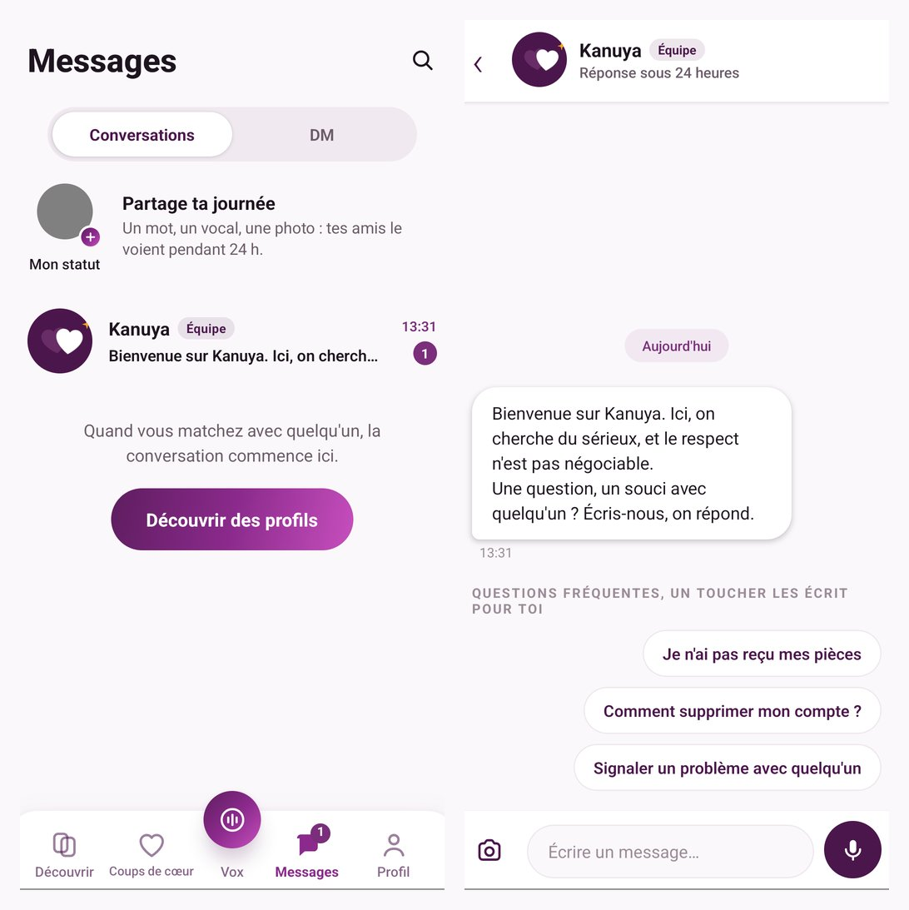

Sécurité des enfants
Mise à jour le 17 novembre 2026
En résumé
- Tolérance zéro
- Kanuya interdit toute exploitation ou tout abus sexuel concernant un enfant. Sans exception et sans avertissement préalable.
- Réservée aux majeurs
- L'inscription est refusée en dessous de 18 ans, et la date de naissance ne peut plus être modifiée ensuite.
- Signaler depuis l'application
- Un motif « Personne mineure » existe sur chaque profil et chaque conversation. Il n'y a pas besoin de quitter l'application.
- Nous écrire dans l'application
- La conversation « Kanuya », épinglée en tête des Messages, permet d'écrire à l'équipe sans quitter l'application.
- Ce que nous faisons
- Suspension immédiate, retrait des contenus, conservation des éléments, et signalement au NCMEC ou aux autorités compétentes.
- Nous joindre
- nenandjabhata@proton.me — une personne de l'équipe répond de ces questions.
Notre position
Kanuya - Rencontres en Guinée, éditée par Kalouma Tech, interdit absolument l'exploitation et les abus sexuels concernant des enfants, ainsi que tout contenu qui les représente, les encourage ou les facilite.
Cela comprend les images d'abus sexuels sur mineurs, la sollicitation d'un mineur à des fins sexuelles, la mise en relation d'un adulte avec un mineur à ces fins, et toute tentative de contourner nos règles d'âge.
Il n'y a pas de premier avertissement pour ces manquements. Un compte concerné est fermé.
Une application réservée aux adultes
Kanuya est réservée aux personnes de 18 ans et plus. C'est une condition d'accès, pas une recommandation.
L'inscription demande la date de naissance et la refuse si elle correspond à moins de 18 ans. Une fois le compte créé, cette date ne peut plus être modifiée : c'est une information de confiance entre membres, et la verrouiller empêche de contourner la règle après coup.
La vérification par selfie, examinée par une personne de l'équipe, permet de confirmer qu'un profil correspond bien à ses photos.
Signaler et nous écrire depuis l'application
Chaque profil et chaque conversation peuvent être signalés sans quitter l'application, et « Personne mineure » est l'un des motifs proposés.
Un message précis peut être signalé individuellement, pas seulement un profil.
Bloquer quelqu'un est immédiat, et la personne bloquée n'en est jamais informée.
Ces signalements arrivent à une personne de l'équipe, pas à un automate.
Pour tout autre commentaire ou toute inquiétude, chaque membre dispose de la conversation « Kanuya », épinglée en tête de ses Messages : il écrit à l'équipe sans quitter l'application, et une personne lui répond.
Ce que nous faisons d'un signalement
Les signalements concernant un mineur sont traités en priorité sur tous les autres.
Le compte visé est suspendu pendant l'examen, et fermé définitivement si le signalement est fondé.
Les contenus en cause (photos, messages, statuts) sont retirés dès que nous en avons connaissance.
Les éléments nécessaires sont conservés pour permettre une enquête, et non effacés avec le compte.
Les cas confirmés sont signalés au National Center for Missing & Exploited Children (NCMEC) ou à l'autorité compétente du pays concerné, conformément au droit applicable, et nous répondons aux demandes légales qui nous sont adressées.
Nous joindre
Pour toute question sur ces règles, sur un signalement en cours, ou pour toute demande d'une autorité : nenandjabhata@proton.me.
Ces messages sont lus par une personne de l'équipe, capable de répondre de nos pratiques et de notre conformité en matière de prévention des contenus d'abus sexuels sur mineurs.
Si tu penses qu'un enfant est en danger immédiat, préviens d'abord les services d'urgence de ton pays.
Dernière mise à jour : 17 novembre 2026.

Ces normes sont publiées en application du règlement de Google Play sur les normes liées à la sécurité des enfants.
Child safety standards
Updated November 17, 2026
Our position
Kanuya - Rencontres en Guinée, published by Kalouma Tech, strictly prohibits child sexual abuse and exploitation (CSAE), as well as any content that depicts, encourages or facilitates it.
This includes child sexual abuse material (CSAM), the solicitation of a minor for sexual purposes, putting an adult in contact with a minor for such purposes, and any attempt to get around our age rules.
There is no first warning for these violations. The account involved is closed.
An app for adults only
Kanuya is for people aged 18 and over. It is a condition of access, not a recommendation.
Sign-up asks for the date of birth and is refused if it is under 18. Once the account is created, this date cannot be changed, so the rule cannot be circumvented afterwards.
Selfie verification, reviewed by a person on our team, confirms that a profile matches its photos.
Reporting and writing to us in the app
Every profile and every conversation can be reported without leaving the app, and "Personne mineure" (minor) is one of the reasons offered.
A specific message can be reported on its own, not only a profile.
Blocking someone is immediate, and the blocked person is never told.
For any other feedback or concern, every member has the "Kanuya" conversation, pinned at the top of Messages: they write to our team without leaving the app, and a person replies.
Reports and messages reach a person on our team, not an automated system.
What we do with a report
Reports involving a minor are handled before all others.
The account involved is suspended during the review, and closed permanently if the report is founded.
The content involved (photos, messages, statuses) is removed as soon as we become aware of it.
The necessary evidence is preserved to allow an investigation, and is not deleted with the account.
Confirmed cases are reported to the National Center for Missing & Exploited Children (NCMEC) or to the competent authority of the country concerned, in accordance with applicable law, and we respond to the legal requests we receive.
Contact us
For any question about these rules, about a report in progress, or for any request from an authority: nenandjabhata@proton.me.
Child safety point of contact: nenandjabhata@proton.me. These messages are read by a person on our team who can speak to our practices and compliance in preventing child sexual abuse material.
If you believe a child is in immediate danger, contact your country's emergency services first.
These standards are published under the Google Play Child Safety Standards policy.